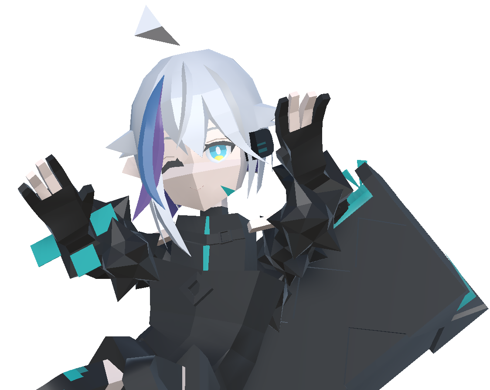
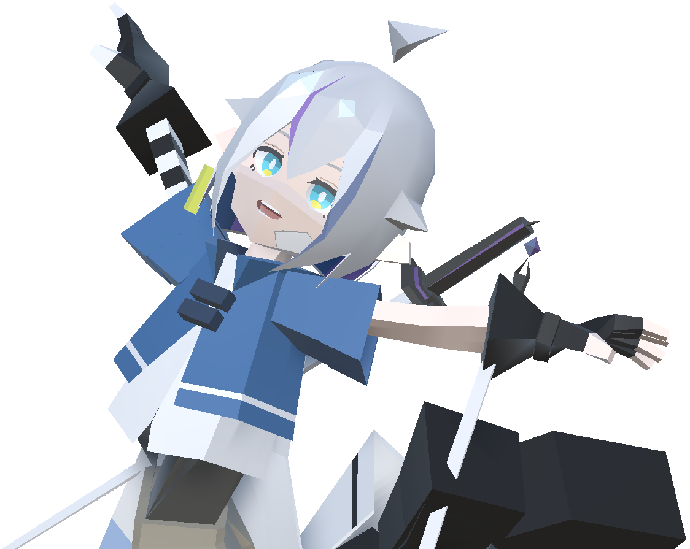
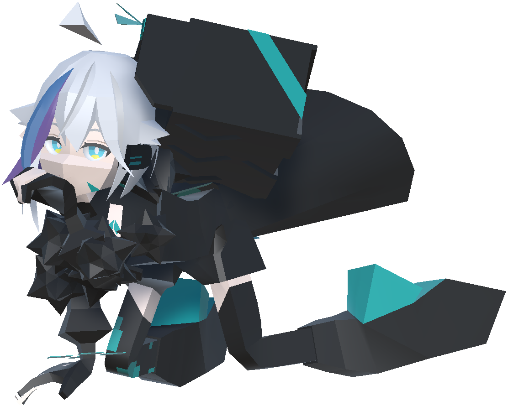
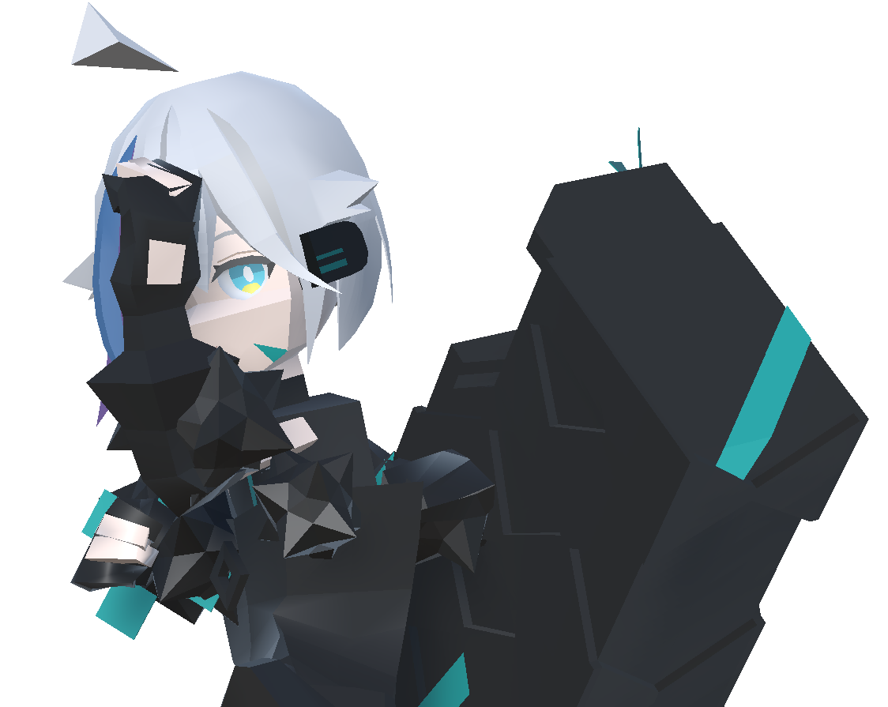
スキル
1.HTML
適切なHTMLタグ(header, main, sectionなど)を選択して構造化
2.CSS
・レスポンシブ対応
・Flex/Grid等のレイアウト編集
3.jQuery
・クリック、ホバー
・スライドショー
・スムーススクロール
4.Java
・変数 宣言、代入、参照
・if、for文等
・オブジェクト指向
5.Git、GitHub
・status、diff
・add、commit
・log
・restore
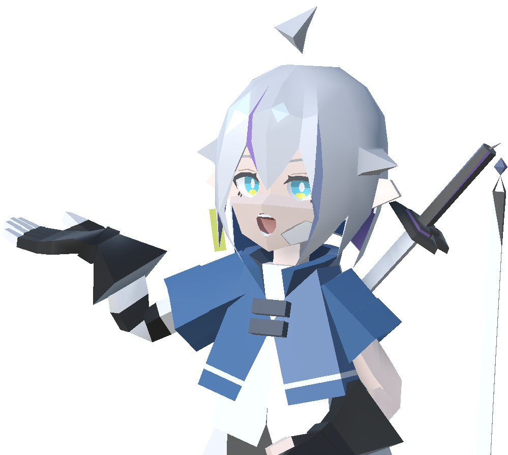
私の強み
エンジニアとして
やりたいこと
合理的な思考・もの作りが得意な強みを生かし、システム・アプリ等開発に携わりたいです。
将来は、社内外から信頼される技術力の高いエンジニアとなりたいと考えておりますが、まずはがむしゃらに業務に食らいつきエンジニアとしての経験を重ねたいと考えております。
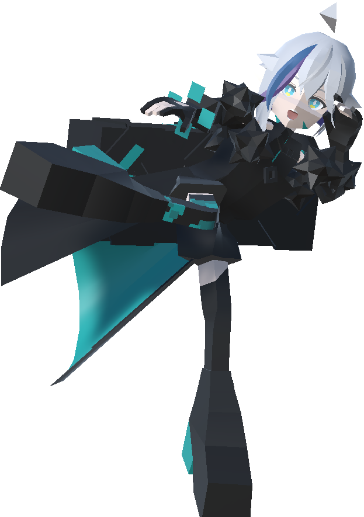
おまけ
01 | サイト制作工程
初めにおおまかな構成図を作成したものの、完成したものは大きくかけ離れたものになっていたとか…
サイトが完成した頃は、プログラミングの学習を始めて、約１か月が経過していましたが、
できることが増えていく過程が楽しいため、継続して学習できました。
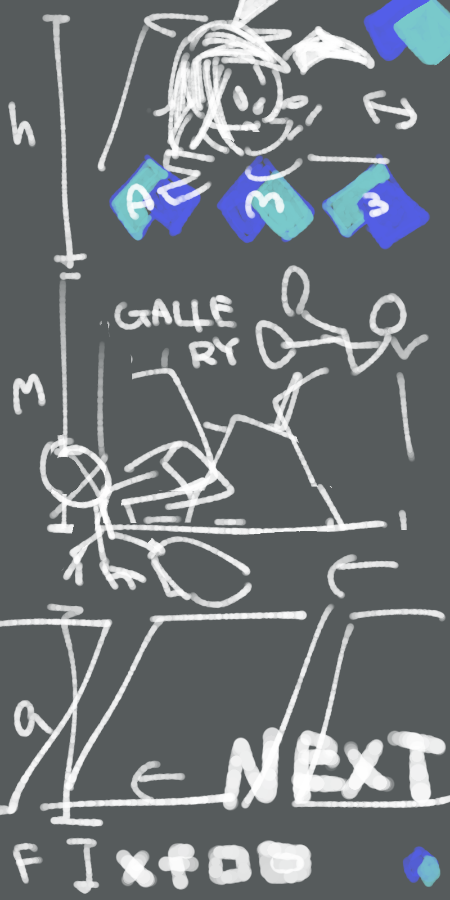
02 | サイト制作中に苦戦したこと
CSSで「.offset()」を初めて使用しましたが、要素の位置という説明がなぜか全く理解できなかったため、offset、scrollTop、windowHeightの高さを絵で書いたところ、秒で理解することができました。
図や絵がある方が理解が早いため、今後も分からないことがあれば、すぐに絵を書くと心に決めました。
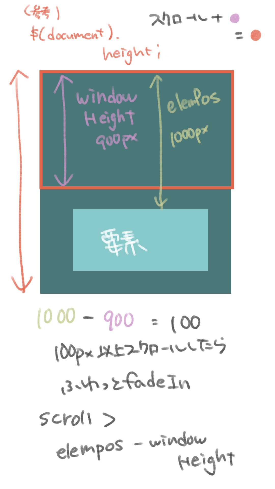
03 | いつか作りたいもの（ごほうびアプリ）
明日までに参考書のP.30まで勉強する・資格取得等をすると、ポイントが加算され、ポイントで好きなおかしやアイスを買うことができます。
ポイントを貯めておいてまとめ買いも可能。
ジャイアントコーン（赤）が好きです。
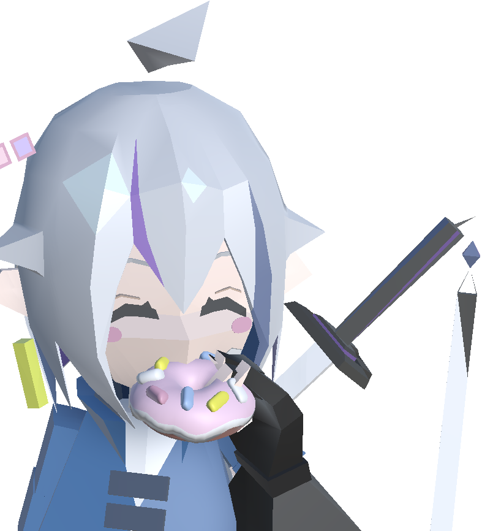
04 | いつか作りたいもの（自作3Dゲーム）
難易度は高いですが、アニメ調3Dアクションゲームを作りたいです。
制作には、エンジニアで培うことができる開発の経験を生かしたいです。
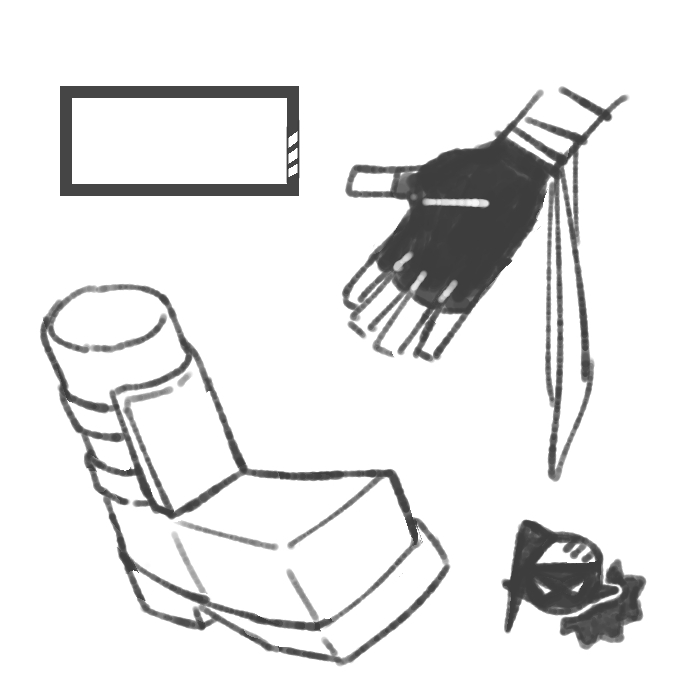
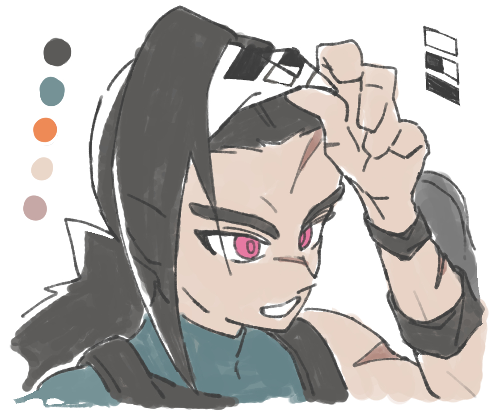